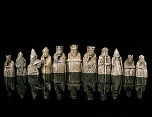

Chess first appeared in India about the 6th century ad and by the 10th century had spread from Asia to the Middle East and Europe.
Since at least the 15th century, chess has been known as the “royal game” because of its popularity among the nobility.
Rules and set design slowly evolved until both reached today’s standard in the early 19th century.".
The history of chess can be traced back nearly 1500 years to its earliest known predecessor, called chaturanga, in India; its prehistory is the subject of speculation.
From India it spread to Persia.
Following the Arab invasion and conquest of Persia, chess was taken up by the Muslim world and subsequently spread to Spain and the rest of Southern Europe.
The game evolved roughly into its current form by about 1500 CE.